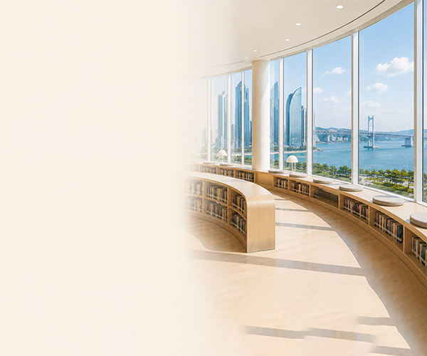
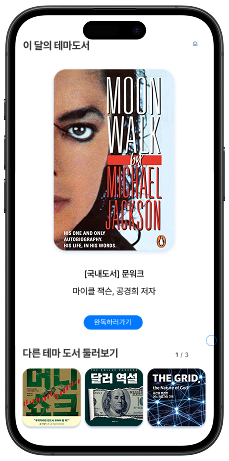
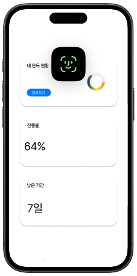

따로 인증할 필요 없이
대출하고, 반납하면 끝
대출·반납 기록이 자동으로 연동돼요.
완독하면 별도의 인증 없이 바로 너울지수로 쌓입니다.

부산의 바다를 닮은 깊고 넓은 지식의 흐름을 담아, 누구나 자유롭게 배우고 소통하며 함께 성장하는 부산도서관만의 새로운 경험을 제공합니다.
책너울 서비스에서 제공하는
부산도서관만의 독자적인 콘텐츠입니다.
매달 하나의 테마 도서를 선정하여 정해진 기간 내에 독서를 완료하고 완독을 인증하는 독서 참여형 프로그램으로,
참여자의 완독 인증이 증가할수록 참여 도서관의 '완독 웨이브' 물결이 점차 커지고 퍼져나갑니다.
대출·반납 기록이 자동으로 연동돼요.
완독하면 별도의 인증 없이 바로 너울지수로 쌓입니다.
내 완독을 짧게 표현하면 돼요.
짧아도 그 울림은 부산 전역으로 퍼져나가요.
확인된 대출 기록과 정해진 태그로만 움직여요.
불필요한 글타래 걱정 없이, 누구나 마음 편히 참여할 수 있어요.
16개 구·군의 참여 현황이 물결처럼 채워져요.
어디까지 퍼졌는지 한눈에 볼 수 있어요.
‘완독 웨이브’ 메뉴에 접속하여
이번 달 테마 도서를 확인한다.
원하는 테마 도서를 선택하고
대출 시 챌린지 자동 시작한다.
정해진 기간 동안 도서를 읽으며 진행률(%)과 남은 기간을 확인한다.
독서를 마친 후 반납하면 자동으로 완독이 인증됩니다.
인증이 승인되면 개인의 완독 기록이 저장되고 참여 이력이 누적된다.
새로운 인증이 추가될 때마다 메인 화면의 물결 그래픽이 점차 커지고 퍼져 나가며 참여 확산을 시각적으로 표현한다.
전체 참여자 수, 완독률, 실시간 물결 변화 등을 통해 프로그램의 참여 현황을 확인한다.
완독 배지와 리워드를 획득하고, 다음 달 테마 도서 챌린지에 이어 참여할 수 있다.


부산을 실내·실외에서 경험하는
부산도서관만의 독자적인 콘텐츠입니다.
독서를 완료하거나 해당 랜드마크를 방문하면
소개 페이지에서 부산의 매력을 확인할 수 있습니다.
바다와 기찻길이 만나는
해운대의 낭만 명소
부산을 대표하는
도심 속 바다
밤바다를 밝히는
부산의 대표 야경
넓은 백사장과 노을이
아름다운 해변
바다와 사찰이 어우러진
부산의 대표 명소